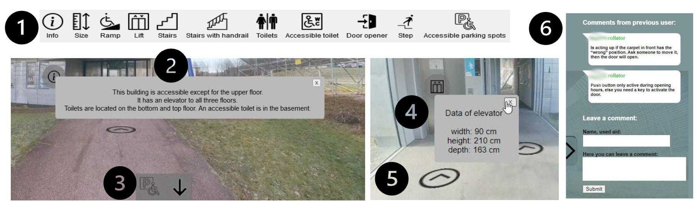

Virtual Tours with Accessibility Annotations: A Prototype for Campus Accessibility Assessment for Mobility-Disabled Students

(opens in new tab)
Venue. VRW (2026)
Materials.
DOI(opens in new tab)
Abstract. Mobility-disabled students often face barriers when visiting campus. Consequently, they rely on detailed planning to meet their individual needs. The planning process depends on accessibility information, especially of building interiors. This project examines the potential of a virtual tour featuring 360-degree images with accessibility annotations. A proof-of-concept prototype was developed based on requirements gathered through a focus group. The resulting prototype enables users to virtually explore the building to judge accessibility. Our initial findings suggest that combining 360-degree imagery with textual information could enable more accurate accessibility judgments tailored to individual needs than existing information sources.
Link to this page: